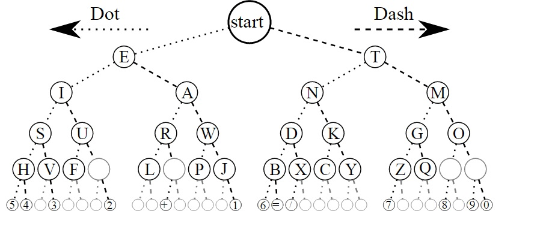

Morse Code»

A cool representation of the code using a binary tree»
Congratulations on sending your Morse Code message! 😻!
Obviously, Morse Code is mostly a historical artifact these days, but it was incredibly influential as widespread example of encoding text in a communicable format, which lead to the baudot code, ASCII codes, and modern Unicode. It has an interesting history.
Two interesting stories about Morse code:
- during the Vietnam War, an American who was captured by the North Vietnamese and held in a POW camp was forced to make propaganda videos claiming how he had converted to communism and encouraging other Americans to do so. However, Jeremiah Denton remembered Morse code from his military training, and was blinking out the word TORTURE with his eyelids, and his captors didn’t realize that. American intelligence officers recognized the code and understood the clue he was sending.
- during World War II, Morse code was a primary means of communication by both the Axis and the Allies. Almost all of the messages encoded with the Enigma machine were sent via radio Morse code and intercepted by British radio dishes. The British could often even tell which German radio officer was sending a particular message because of subtle patterns in the timing of their dots and dashes, providing an important clue to breaking the coded message.